anim.gif
ayo-linuxfr_version_hard_128.png
ayo_logo_disc_128.png
ayo-linuxfr_rentree.png
banner-freesurf.png
DaLinux-LoftStory-frenchPage.png (infos, sources)
DaLoftStoryfrenchPage2.png (infos, sources)
da.png (infos)
FixXxeR_DLFP01.png (infos)
icon.png
Linux-FR_copy3.png
Linux-FR_copy.png
linuxfr.gif
linuxfr-joel.png
linuxfr_rougier.png (infos)
linuxfrtop.png
logo_antoine.png (infos)
logo_dlfp.png (infos)
 logo_eclair.png (infos)
logo_eclair.png (infos)
logo_linuxfr_daweb.png
logo_linuxfr_slashdot.png
logo_linuxfr_white.png
logo_moto.png (infos)
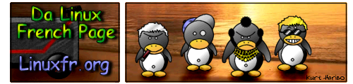Logo.png
logoshift.png
logo_ski.png (infos, source)
logovalentin.png (infos)
pingouin2.png (infos)
top2_.png
top2.jpg
top.png
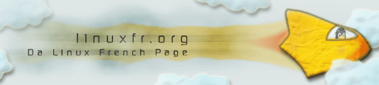TuxInTheSky.png (infos)
linuxfr2_journee_democratie_2004.png
linuxfr_thewall.png
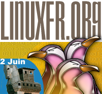logo_brevets_20050602.png
ael2_fr.png
banner-dadvsi-30juin.png
banner_fosdem2005.gif
banner_fosdem2006.gif
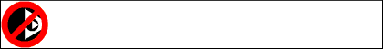banner_stopdrm7mai.gif
banniere_rmll_2005.png
banniere_rmll_2006.png
dadvsi0.png
dadvsi1.png
dadvsi2.png
dadvsi3.png
dadvsi4.png
dadvsi5.png
dadvsi6.png
dadvsi_signez.png
epla_londres.png
 humour_plagiats.png (infos, sources)
humour_plagiats.png (infos, sources)
linuxfr2_100.png
linuxfr2_classic_back.png
 linuxfr2_classic.png
linuxfr2_classic.png
linuxfr2_codebar.png
linuxfr2_explicit.png
linuxfr2_gnu_approved.png
linuxfr2_gnu.png
linuxfr2_gouttes.png
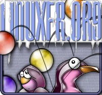linuxfr2_logo-frozen.png (sources)
linuxfr2_logo-june2003_ok_255.png (sources et sources)
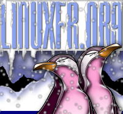linuxfr2_mountain.png (sources)
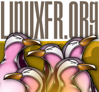linuxfr2_plusieur.png
linuxfr_dadvsi.png
linuxfr-fb2.png
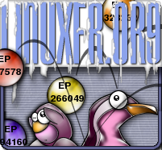linuxfr_logo-frozen-brevets.png
linuxfr_noel.png
 logo_linuxfr_eucd.png
logo_linuxfr_eucd.png
Oct3rd468x60.Medium.png
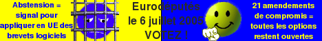vot050706-468x60.fr.png
ayo_hiver_linuxfr_bis_256_color.png
ayo-linuxfr_miss_128.png
 JO_des_OS.png
JO_des_OS.png
linux_frog_exemple.png
linuxfr-ohl2.png
linuxfr-ohl.png
logo1mai.png
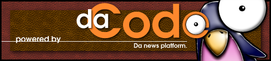logo2.png
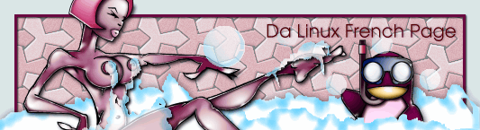miss_alounger_dlfp.png
RMLL.png
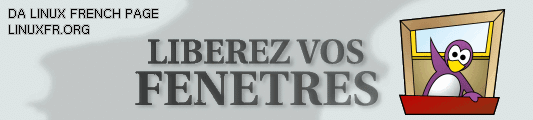xael-linuxfr_128.png
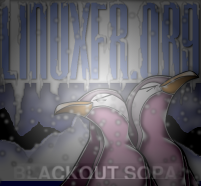linuxfr2_blackout_sopa.png
oldstyle.png
logo-linuxfr-automne.png
logo-linuxfr-automne-hd-orange.png
logo-linuxfr-automne-hd-rouge.png
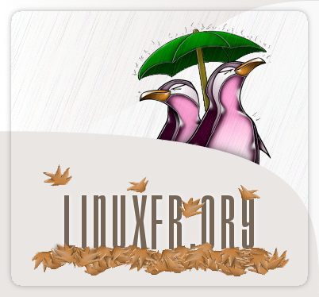logo-linuxfr-automne-hd-vert.png
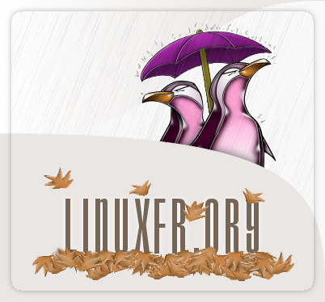logo-linuxfr-automne-hd-violet.png
logo-linuxfr.png (SVG, SVG, sources et sources)
logo-linuxfr-bord.png
logo-linuxfr-cadre-dehors.png
logo-linuxfr-cadre-ombre-hd.png
logo-linuxfr-cadre-ombre.png
logo-linuxfr-cadre.png
logo-linuxfr-vignette.png
linuxfr-zemarmot.png (infos, sources)
linuxfr_ayo.png (vectorisation svg par Ninon)
logo-linuxfr-newtonadventure.png par devnewton
linuxfr_ayo-masques2.png par Ysabeau
 logo-linuxfr-zemarmot-masque.png par Ysabeau
logo-linuxfr-zemarmot-masque.png par Ysabeau
 logo-linuxfr-automne-hd-vert-masques.png par Ysabeau
logo-linuxfr-automne-hd-vert-masques.png par Ysabeau
logo_linuxfr_ayo_hiver_masque.png par Ysabeau
logo_linuxfr_ayo_noel_masque.png par Ysabeau